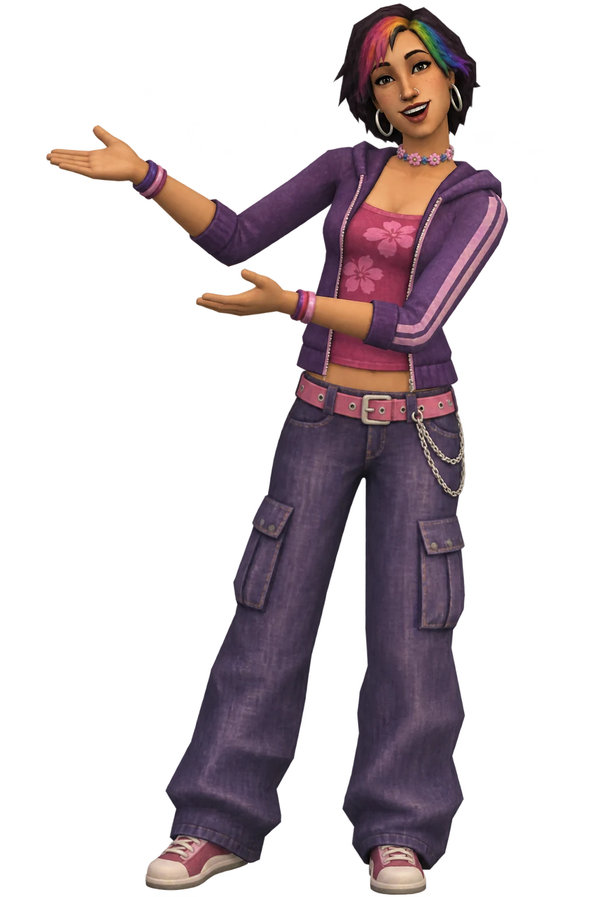
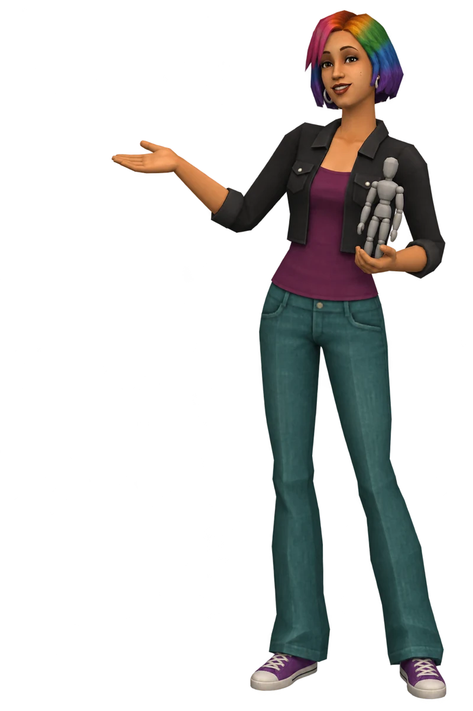

What I care about
- Cozy games
- Kind little details
- Households, not just Sims
- Unexpected gifts
- Notes and surprises
Behind the mods & characters
Welcome to my studio, where the ideas become characters, mods and the occasional very stubborn problem.
See what I’m making →Meet the characters ↗
A character from the studioI make small, cozy things for The Sims 4: mods that smooth a rough edge, add a little surprise, or make a Sim's day a bit softer. You can call me Jenn.
Most of these ideas start with something I'd like in my own game, whether it's a sweet note or a different place for a household to live. I share the mods here as they take shape, along with pictures and stories from making them.
Learning the tools, shaping the characters
I’m creating characters and exploring clothing designs for The Sims 4. The character art and outfits here are ideas I’m working toward, not finished custom-content downloads.

At the workbench
Some become small changes to the game. Others start as a character, an outfit or a picture worth following a little further.
 Look around the studio ↗
Look around the studio ↗The current mods are being developed for The Sims 4 1.105. I keep a devlog about the ideas behind them, the things that went wrong and what changed along the way. If you enjoy the technical side, there’s also a post about trying changes on separate copies of saves.
Visit the workbench notes →You can find my projects on GitHub. If you run into a problem with a mod, open an issue in its repository so I can see what happened.